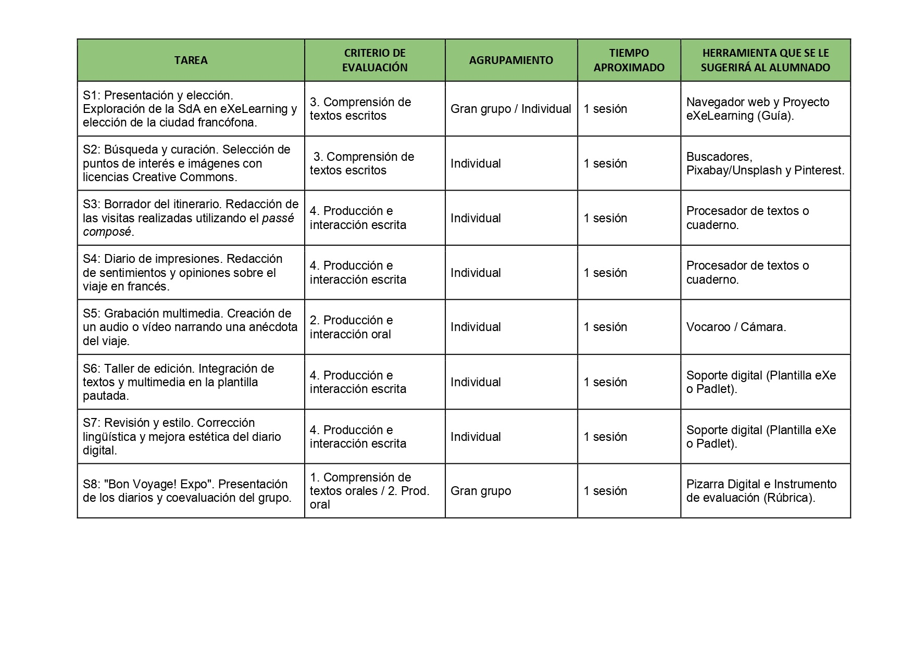

Guide didactique
Ce projet est conçu pour être appliqué en classe de 3.º ESO (Français, niveau B1), dans une approche communicative et orientée vers l’action.
Il vise à développer simultanément la compétence communicative en langue française et la compétence numérique des élèves, à travers une tâche finale signifiante et motivante.
Organisation générale
Durée : 8 séances
Modalité : travail en groupe
Produit final : carnet de voyage numérique (eXeLearning)
Langue de travail : français
Méthodologie
Le projet repose sur :
- une approche communicative et actionnelle ;
- le travail coopératif ;
- l’apprentissage par tâches ;
- l’intégration des outils numériques ;
- un guidage progressif à travers des supports et des modèles.
- L’élève est placé au centre de son apprentissage et agit comme un acteur social, en réalisant des tâches proches de situations réelles.
Relation entre tâches et critères d’évaluation
Le tableau suivant montre la correspondance entre les activités du projet et les critères d’évaluation :

Attention à la diversité (DUA)
Ce projet est conçu selon les principes du Design Universel pour l’Apprentissage (DUA) :
- Multiples formes de représentation : supports visuels, écrits et audio ;
- Multiples formes d’action et d’expression : rédaction, oral, création numérique ;
- Multiples formes d’engagement : travail en groupe, choix de la ville, répartition des rôles.
- Des supports guidés (modèles, structures, exemples) sont proposés pour accompagner les élèves ayant besoin de plus d’aide.
Document complet
La version complète du document peut être consultée Ici
{kind=link}